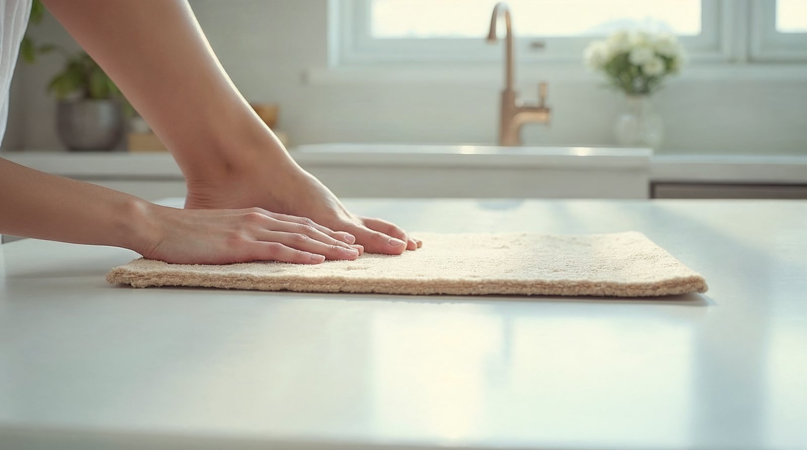

이종호 한의사 감수좋은꿈참사랑한의원 대표원장 (한의사 면허번호 19769)발행 2026-11-26 · 수정 2026-11-26
이 글의 차례
점심 장사가 끝나고 주방 불을 잠시 낮춘 시간, 그제야 손목이 욱신거리는 것을 느낍니다. 오전 내내 양파와 대파를 썰고, 불 앞에서 팬을 흔들고, 육수가 든 큰 냄비를 옮겼습니다. 허리를 펴려니 뻣뻣하게 굳어 한 번에 펴지지 않습니다. 저녁 장사까지 몇 시간 남지 않았는데 다리는 이미 무겁습니다.
주방에서 일하시는 분들은 아파도 자리를 비우기가 어렵습니다. 주문이 밀려 있고, 손이 하나 빠지면 다른 사람이 그만큼 더 바빠집니다. 그래서 파스 한 장 붙이고 버티다가 통증이 몇 달째 이어진 뒤에야 진료실을 찾는 경우가 많습니다.
주방 일은 손목과 손가락의 반복 동작, 무거운 것을 드는 일, 오래 서 있는 일, 뜨거운 불과 찬물을 오가는 환경이 하루에 모두 겹칩니다. 그래서 손목만, 허리만 아프기보다 여러 자리가 함께 지쳐 가는 경우가 흔합니다.
이 글에서는 주방 일의 어떤 동작이 어디에 부담을 주는지, 흔히 보이는 통증을 어떻게 나눠 보는지, 일을 이어 가면서 해 볼 수 있는 것과 한의원에서 함께 살필 수 있는 부분을 정리해 보겠습니다.
주방 일의 어떤 동작이 어디에 부담을 줄까요
칼질은 손목을 고정한 채 손가락과 팔뚝 근육으로 같은 동작을 수천 번 반복합니다. 칼을 쥐는 손의 엄지와 검지 사이, 팔뚝 바깥쪽 근육, 팔꿈치 바깥쪽에 부담이 쌓이고, 재료를 누르는 반대손도 손가락 끝에 힘이 들어갑니다.
팬이나 웍을 흔드는 일은 무거운 기구를 든 채 손목을 위아래로 튕기는 동작입니다. 손목과 엄지 쪽 힘줄, 팔꿈치, 어깨에 순간적인 힘이 반복해서 실립니다. 큰 국자로 육수를 젓고 퍼 담는 일도 손목을 비트는 동작의 연속입니다.
육수가 든 큰 냄비, 쌀 포대, 식자재 상자를 들고 옮기는 일은 허리에 큰 부담을 줍니다. 특히 몸에서 멀리 떨어진 채 들거나, 들면서 허리를 비틀면 허리 근육과 디스크가 받는 힘이 크게 늘어납니다. 낮은 선반이나 냉장고 아래 칸에서 물건을 꺼낼 때도 허리를 숙이는 일이 반복됩니다.
여기에 하루 종일 서 있는 일이 더해집니다. 딱딱하고 미끄러운 바닥 위에서 오래 서 있으면 종아리와 발바닥, 허리가 함께 지칩니다. 조리대가 키보다 낮으면 허리를 굽힌 채 일하게 되고, 높으면 어깨를 들어 올린 채 일하게 됩니다.
왜 손목과 허리가 함께 아파 올까요
손목과 허리는 멀리 떨어져 있지만 주방에서는 같은 동작 안에서 함께 일합니다. 허리를 굽힌 채 칼질을 하면 팔과 손목이 받는 각도가 달라지고, 허리가 지쳐 몸통이 흔들리면 손목과 어깨가 더 힘을 써서 동작을 버팁니다.
쉬는 시간이 몰려 있는 것도 이유입니다. 바쁜 시간에는 몇 시간 동안 쉬지 않고 같은 동작을 이어 가다가, 한가한 시간에는 갑자기 멈춥니다. 미세한 피로가 바쁜 시간 동안 한꺼번에 쌓이고, 짧게 쉬는 동안 다 회복되지 못한 채 다음 바쁜 시간을 맞습니다.
뜨거운 불 앞과 찬 냉장고, 찬물 설거지를 오가는 환경도 몸에 부담을 줍니다. 땀을 흘린 뒤 찬 바람을 쐬면 근육이 굳기 쉽고, 찬물에 오래 손을 담그면 손가락 마디가 뻣뻣해집니다.
끼니를 일정하게 먹기 어렵고, 맛을 보느라 조금씩 집어 먹는 것으로 끼니를 대신하는 일도 흔합니다. 늦게 끝나 잠드는 시각이 늦어지고 잠이 부족하면 근육과 힘줄의 회복도 더뎌집니다.
한의학에서는 이렇게 오래 서서 같은 일을 반복하며 근육과 뼈가 지친 모습을 예로부터 노권(勞倦)이라는 말로 설명해 왔습니다. 진찰할 때 참고하는 전통적인 표현이며, 진료실에서는 이를 바탕으로 피로와 잠, 끼니, 손발의 온도를 함께 봅니다.
주방 일에서 자주 보이는 통증은 무엇인가요
주방에서 일하시는 분들께 자주 보이는 통증을 나눠 보면 다음과 같습니다. 한 분에게 둘 이상이 겹치는 경우도 흔합니다.
- 엄지 쪽 손목이 찌릿한 드퀘르뱅 건초염: 팬을 흔들고 국자를 쓰며 엄지 힘줄이 지나는 길에 부담이 쌓입니다.
- 팔꿈치 바깥이 시큰한 엘보: 칼을 쥐고 손목을 젖히는 동작이 이어지면서 생기기 쉽습니다.
- 손가락이 딸깍 걸리는 방아쇠수지와 손목터널증후군: 칼과 도구를 꽉 쥐는 일이 쌓이면 손가락 뿌리와 손목 안쪽에 문제가 생깁니다.
- 허리를 삐끗하는 급성 요추 염좌: 무거운 냄비나 상자를 갑자기 들거나 비틀며 들 때 생깁니다.
- 오래 서서 생기는 허리의 묵직함과 다리 저림, 종아리와 발바닥의 피로
- 어깨와 목의 뭉침: 고개를 숙여 재료를 손질하고 팔을 들어 선반을 오가는 일과 연결됩니다.
허리 통증이 엉덩이를 지나 다리로 뻗치며 저리다면 허리 디스크처럼 신경이 눌리는 문제를 함께 살펴야 합니다. 손가락 저림이 있다면 어느 손가락이 저린지가 신경이 눌린 자리를 알려 주는 단서가 됩니다.
무거운 것은 어떻게 들어야 허리가 덜 힘들까요
주방에서 허리를 다치는 순간은 대개 무거운 것을 들 때입니다. 가장 중요한 것은 물건을 몸에 바짝 붙여서 드는 것입니다. 같은 무게라도 몸에서 멀어질수록 허리가 받는 힘은 몇 배로 커집니다.
물건 앞에 바짝 다가가 발을 어깨너비로 벌리고, 허리를 굽히기보다 무릎을 굽혀 몸을 낮춘 뒤, 배에 힘을 주고 다리 힘으로 일어서세요. 들고 방향을 바꿀 때는 허리만 비틀지 말고 발을 옮겨 몸 전체를 돌리는 것이 좋습니다.
육수가 든 큰 냄비는 가능하면 혼자 들지 말고 두 사람이 함께 들거나, 국자로 덜어 낸 뒤 옮기세요. 자주 쓰는 무거운 식자재는 허리 높이 선반에 두고, 가벼운 것을 아래나 위 칸에 두는 것만으로도 허리를 숙이는 횟수가 줄어듭니다.
이미 허리를 한번 삐끗했던 분이라면 아침 첫 일과에 무거운 것을 드는 일을 피하는 것이 좋습니다. 자고 일어난 직후에는 허리 주변 조직이 아직 굳어 있어 같은 무게에도 다치기 쉽기 때문입니다.
불 앞의 열기와 찬 냉장고 사이에서는 어떻게 지내나요
여름 주방은 불 앞 열기로 땀이 비 오듯 흐르고, 그 사이 대형 냉장고나 냉동 창고를 오가며 찬 공기를 쐬게 됩니다. 땀에 젖은 채 찬 바람을 맞으면 목과 어깨, 허리 근육이 갑자기 움츠러들어 담이 걸리기 쉽습니다. 젖은 옷을 갈아입을 여벌을 챙겨 두고, 냉동 창고에 들어갈 때는 얇은 겉옷을 걸치는 것이 좋습니다.
땀을 많이 흘린 날은 물과 함께 짠맛이 약간 있는 음식으로 몸의 균형을 맞춰 주세요. 물을 충분히 마시지 않으면 근육에 쥐가 나기 쉽고 오후에 기운이 크게 떨어집니다. 일하는 동안 손이 닿는 곳에 물병을 두고 조금씩 자주 드시길 권합니다.
겨울 주방은 반대로 바닥과 공기가 차가워 몸이 덜 풀린 채 하루를 시작하게 됩니다. 출근하자마자 무거운 식자재를 옮기기보다 몇 분이라도 몸을 데운 뒤 시작하세요.
막 시작했거나 오랜만에 복귀했다면
주방 일을 처음 시작했거나 쉬었다가 다시 돌아온 시기에는 통증이 잘 생깁니다. 몸이 하루 종일 서서 칼질하고 무거운 것을 드는 일에 아직 적응하지 못했기 때문입니다. 처음 몇 주는 손목과 허리, 발바닥이 함께 아픈 경우가 흔합니다.
이 시기에는 퇴근 뒤 회복에 조금 더 시간을 들이고, 잠을 충분히 지키는 것이 중요합니다. 아픈 자리가 몇 주가 지나도 줄지 않거나 오히려 넓어진다면 일찍 진찰을 받아 보시는 것이 좋습니다.
함께 일하는 선배나 동료에게 칼 쥐는 법, 무거운 것을 나르는 순서를 물어보는 것도 도움이 됩니다. 오래 일한 분들은 대개 몸을 덜 쓰는 나름의 요령을 갖고 계십니다. 그 요령을 일찍 익히는 것이 몸을 지키는 지름길이 되기도 합니다.
먼저 이렇게 여쭙니다
처음 오시면 저는 대략 이런 순서로 여쭙니다. 미리 생각해 오시면 이야기가 훨씬 수월해집니다.
- 주방 일은 몇 년째 하시고, 하루 몇 시간 서서 일하시나요?
- 칼질, 볶음, 튀김, 설거지, 손질 가운데 어떤 일을 가장 많이 하시나요?
- 손목은 엄지 쪽, 새끼손가락 쪽, 손목 한가운데 중 어디가 아픈가요?
- 허리 통증이 엉덩이나 다리로 뻗치거나 저린가요?
- 무거운 것을 들다 삐끗한 적이 있나요?
- 끼니와 잠은 어떻게 챙기고 계신가요?
- 조리대와 싱크대 높이는 키에 맞나요?
모든 질문에 정확히 답하지 못하셔도 괜찮습니다. 일하는 모습을 동료에게 부탁해 짧게 찍어 오시면, 칼질할 때의 허리 각도와 손목 모양을 함께 볼 수 있습니다.
일상에서 먼저 해 볼 수 있는 것
일터에서의 요령과 함께 퇴근 뒤의 시간도 회복에 중요합니다. 한꺼번에 다 하시기보다 맞는 것을 골라 보세요.
- 칼은 날을 잘 세워 적은 힘으로 썰리게 하고, 손잡이는 손에 맞는 굵기로
- 조리대가 낮으면 도마 아래 받침을 두어 높이 맞추기
- 한 발을 낮은 받침에 번갈아 올려 허리 부담 나누기
- 쿠션 있는 미끄럼 방지 신발과 바닥 매트 쓰기
- 바쁜 시간이 끝나면 손을 털고 허리를 천천히 뒤로 젖혀 펴기 1분
- 찬물 설거지는 고무장갑 안에 면장갑을 끼거나 미지근한 물 쓰기
퇴근 뒤에는 손목과 팔뚝을 따뜻하게 데우고 부드럽게 주물러 주세요. 다리를 조금 높게 두고 쉬면 종아리 붓기도 덜합니다. 허리가 뻣뻣하다면 바로 누워 무릎을 세우고 양 무릎을 좌우로 천천히 넘기는 동작이 도움이 될 수 있습니다.
끼니는 짧게라도 앉아서 드시길 권합니다. 맛보기로 조금씩 집어 먹다 보면 정작 제대로 된 식사를 거르게 되고, 오후에 기운이 떨어지면서 몸이 더 쉽게 지칩니다. 바쁜 시간 전에 미리 간단히 먹어 두는 것도 방법입니다. 주먹밥 하나, 바나나 하나라도 정해진 시각에 드시면 오후 장사를 버티는 힘이 달라집니다.
한의원에서 함께 살필 수 있는 경우
- 칼질이나 팬 흔들기로 손목과 팔꿈치가 시큰한 경우
- 무거운 것을 들다 허리를 삐끗한 뒤 뻣뻣함이 남아 있는 경우
- 오래 서서 일한 날 저녁마다 허리와 다리가 무겁고 저린 경우
- 고개를 숙이는 일로 목과 어깨가 굳는 경우
- 끼니가 불규칙하고 잠이 부족해 피로가 쌓인 경우
좋은꿈참사랑한의원에 오시면 먼저 아래 '먼저 확인이 필요한' 신호가 없는지부터 봅니다. 그다음 맥을 짚고, 손끝부터 어깨, 허리와 다리까지 이어지는 부담의 흐름을 차례로 만져 보며 확인합니다. 다리 저림이 있다면 신경이 눌리는 문제인지도 함께 살핍니다.
진찰한 내용을 바탕으로 침, 추나, 온열 관리, 한약 상담 가운데 지금 상태에 맞는 것을 정합니다. 주방 쉬는 시간이나 쉬는 날에 맞춰 진료 간격을 정하는 경우가 많습니다. 한약을 상의할 때는 드시는 약을 모두 확인하고 신중하게 정합니다.
다리 힘이 빠지거나 저림이 심해지는 경우에는 정형외과나 신경외과 진료를 먼저 권합니다. 일을 이어 가야 하는 상황을 잘 알기에, 쉬라고만 하기보다 일하는 방식을 함께 조정하는 쪽으로 이야기합니다.
이렇게 기록해 오시면 상담이 쉬워집니다
주방 일의 통증은 손님 수와 메뉴에 따라 크게 달라집니다. 2주 정도만 간단히 적어 보세요.
- 하루 일한 시간과 바빴던 시간대
- 아팠던 자리와 통증의 정도를 0에서 10으로
- 무거운 것을 든 일, 삐끗한 순간
- 다리 저림이나 손가락 저림이 있었던 때
- 끼니를 챙긴 시각과 잠든 시각
- 쉬는 날의 통증 변화
기록을 나란히 놓고 보면 어떤 일이 많은 날 어디가 아픈지가 보이기 시작합니다. 그 흐름을 바탕으로 일의 순서와 쉬는 시간을 함께 다시 짜 볼 수 있습니다.

오래 주방에 서기 위해서
주방은 체력과 손기술이 함께 필요한 곳입니다. 아픔을 참고 버티는 것이 익숙해지기 쉽지만, 오래 일하려면 몸이 보내는 신호를 일찍 알아차리는 것이 훨씬 중요합니다.
이번 주에는 무거운 냄비를 몸에 바짝 붙여 드는 것, 바쁜 시간이 끝나면 1분 허리 펴기부터 시작해 보세요. 다음에 오시면 일하는 모습을 찍은 짧은 영상과 기록부터 함께 보겠습니다.
이런 증상은 먼저 확인이 필요합니다
- 무거운 것을 들다 허리를 다친 뒤 다리에 힘이 빠지거나 대소변 보기가 어려워진 경우
- 칼에 깊이 베여 피가 멈추지 않거나 손가락이 굽혀지지 않고 감각이 없는 경우
이런 신호가 있으면 한의원보다 가까운 병원이나 응급실을 먼저 찾으세요.
함께 읽으면 좋은 글
- 하루 종일 서서 일하면 저녁마다 허리가 묵직할 때 어떻게 살피나요?
- 허리를 삐끗해 움직이기 힘든 급성 요추 염좌는 첫 며칠 어떻게 살피나요?
- 팔꿈치 바깥쪽·안쪽이 시큰한 테니스엘보와 골프엘보는 어떻게 살피나요?
- 아기를 안거나 휴대폰을 쥘 때 엄지 쪽 손목이 찌릿한 드퀘르뱅 건초염은 어떻게 살피나요?
- 허리 디스크 초기 신호와 다리 저림은 어떻게 구분하나요?
여쭙는 것
- 주방 일은 몇 년째 하시고, 하루 몇 시간 서서 일하시나요?
- 칼질, 볶음, 튀김, 설거지, 손질 가운데 어떤 일을 가장 많이 하시나요?
- 손목은 엄지 쪽, 새끼손가락 쪽, 손목 한가운데 중 어디가 아픈가요?
생활에서 해 볼 것
- 칼은 날을 잘 세워 적은 힘으로 썰리게 하고, 손잡이는 손에 맞는 굵기로
- 조리대가 낮으면 도마 아래 받침을 두어 높이 맞추기
- 한 발을 낮은 받침에 번갈아 올려 허리 부담 나누기
한의원에서 함께 살필 것
- 칼질이나 팬 흔들기로 손목과 팔꿈치가 시큰한 경우
- 무거운 것을 들다 허리를 삐끗한 뒤 뻣뻣함이 남아 있는 경우
- 오래 서서 일한 날 저녁마다 허리와 다리가 무겁고 저린 경우
먼저 확인이 필요한 신호
- 무거운 것을 들다 허리를 다친 뒤 다리에 힘이 빠지거나 대소변 보기가 어려워진 경우
- 칼에 깊이 베여 피가 멈추지 않거나 손가락이 굽혀지지 않고 감각이 없는 경우
한눈에 보는 표
| 구분 | 핵심 |
|---|---|
| 여쭙는 것 | 주방 일은 몇 년째 하시고, 하루 몇 시간 서서 일하시나요? 칼질, 볶음, 튀김, 설거지, 손질 가운데 어떤 일을 가장 많이 하시나요? |
| 생활에서 해 볼 것 | 칼은 날을 잘 세워 적은 힘으로 썰리게 하고, 손잡이는 손에 맞는 굵기로 조리대가 낮으면 도마 아래 받침을 두어 높이 맞추기 |
| 한의원에서 함께 살필 것 | 칼질이나 팬 흔들기로 손목과 팔꿈치가 시큰한 경우 무거운 것을 들다 허리를 삐끗한 뒤 뻣뻣함이 남아 있는 경우 |
| 먼저 확인이 필요한 신호 | 무거운 것을 들다 허리를 다친 뒤 다리에 힘이 빠지거나 대소변 보기가 어려워진 경우 칼에 깊이 베여 피가 멈추지 않거나 손가락이 굽혀지지 않고 감각이 없는 경우 |
자주 묻는 질문
허리를 삐끗했는데 내일도 주방에 나가야 해요. 어떻게 하나요?
다리 힘 빠짐이나 대소변 문제가 없다면 무거운 것을 드는 일은 동료에게 부탁하고, 아프지 않은 범위에서 조금씩 움직이는 쪽을 권합니다. 통증이 심하면 진찰을 받아 일의 양을 함께 정해 보세요.
손목 보호대를 차고 칼질을 해도 되나요?
너무 꽉 묶으면 팔꿈치와 어깨에 부담이 옮겨갈 수 있습니다. 칼질할 때보다 쉬는 시간이나 잘 때 쓰는 쪽이 맞는지 상태에 따라 정합니다.
바닥 매트와 신발이 정말 차이가 있나요?
딱딱한 바닥에서 오래 서 있으면 종아리와 허리가 쉽게 지쳐서, 쿠션 있는 신발과 매트가 도움이 된다는 분이 많습니다. 미끄럼 방지 기능도 함께 보세요.
손을 찬물에 오래 담그면 손가락이 뻣뻣해지는데 왜 그런가요?
찬물에 손끝 혈관이 좁아지고 힘줄과 관절 주변이 굳기 때문입니다. 고무장갑 안에 면장갑을 끼거나 미지근한 물을 쓰는 것이 도움이 됩니다.
쉬는 날에만 와도 될까요?
쉬는 날에 맞춰 진료 간격을 정하는 분이 많습니다. 진찰한 뒤 상태에 맞는 간격을 함께 정하고, 그사이 주방에서 할 수 있는 요령을 말씀드립니다.
좋은꿈참사랑한의원은 재진 때 지난번 이야기부터 이어서 여쭙니다. 진료시간과 예약은 오시는 길에서 확인하세요.
어디서 상담받을 수 있나요?
좋은꿈참사랑한의원은 서울 동작구 만양로2길 2 신성빌딩 3층·5층(서울 동작구 상도동, 7호선 상도역 3번 출구 근처)에 있습니다. 한의사 3명(이종호 대표원장, 조영기 수석진료원장, 정원영 진료원장)이 진료합니다. 진료시간은 평일 09:30~20:00(점심 13:00~14:00), 토·일·공휴일 09:30~15:00이며, 방문 전 전화로 확인을 권합니다. 예약은 네이버 예약, 카카오톡 상담, 전화 02-815-7510로 받습니다.
이 글은 일반적인 건강 정보이며 개인의 진단이나 치료를 대신하지 않습니다. 증상이 있거나 복용 중인 약이 있다면 진료를 통해 확인하세요. 치료 효과는 개인마다 다를 수 있습니다.
작성 기준: 일반적으로 알려져 있는 건강 정보를 참고해 정리했습니다(대표원장 감수). 증상 기록은 1~2주 동안 하루 1회, 비슷한 시간에 적어 오시면 지난 상태와 비교하기 쉽습니다.